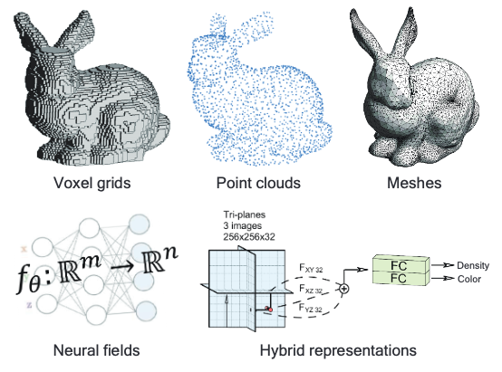
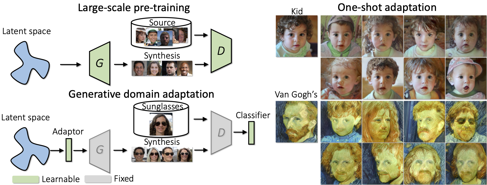
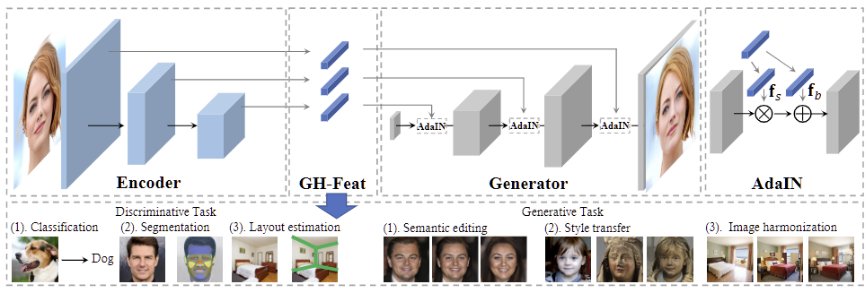
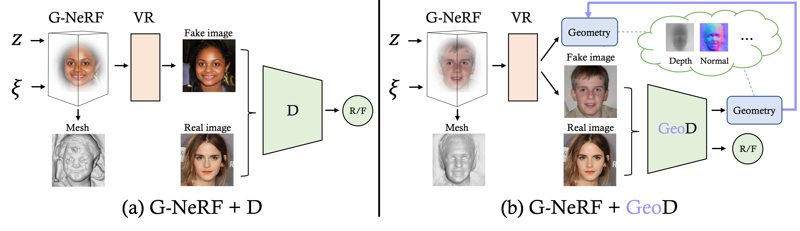
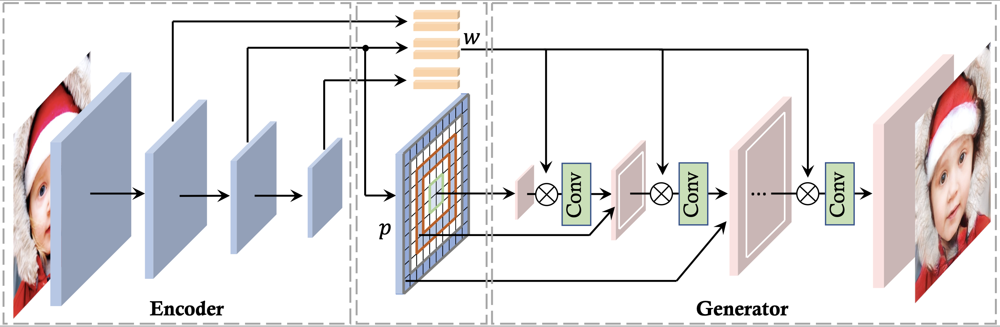
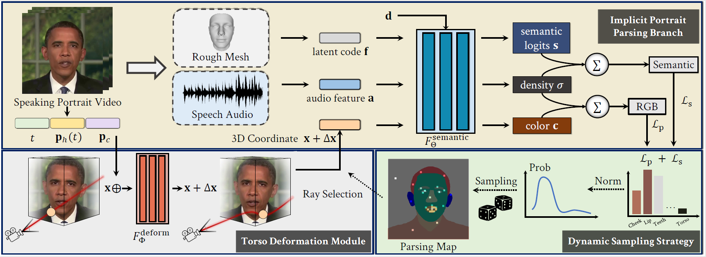
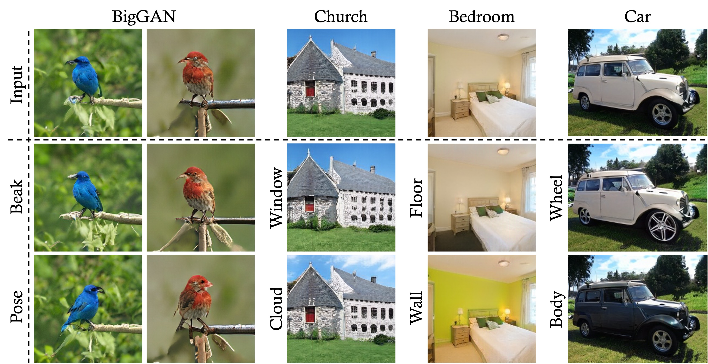
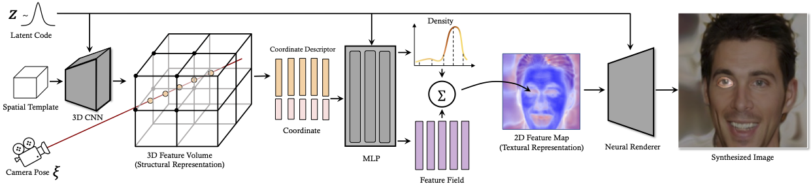

|
Department of Information Engineering The Chinese University of Hong Kong E-mail / Github / Twitter |

|
Biography
Yinghao Xu is a fourth-year Ph.D. student at Multimedia Lab (MMLab), Department of Information Engineering in The Chinese University of Hong Kong. His supervisor is Prof. Dahua Lin and he worked closely with Prof. Bolei Zhou.
He is very interested in generative models for visual understanding and content recreation, particularly in 3D generative models. He also collaborates with Dr. Bo Dai and Dr. Yujun Shen and Dr. Ceyuan Yang.
Before that, he graduated from Zhejiang University in 2019, advised by Dr. Lechao Cheng and Prof. Chunguang Li.
News
- [11/2022] The extension of GHFeat got accepted by TPAMI.
- [10/2022] We post the survey on 3D generative models.
- [09/2022] Two papers, with one spotlight, will appear at NeurIPS 2022.
- [07/2022] Give a talk about 3D generative models at Stanford Computational Imaging Lab.
- [07/2022] SSP-NeRF (Oral) and PadInv are accepted by ECCV 2022.
- [05/2022] ReSeFa is accepted by ICML 2022.
- [03/2022] CMPL is accepted as an oral paper by CVPR 2022.
- [03/2022] We are collecting studies on 3D generation, based on which we hope to provide an overview of this field and a better understanding on its evolution. Please stay tuned!
- [03/2022] Four papers are accepted by CVPR 2022.
- [02/2022] We release Hammer, a sufficiently upgraded version of GenForce, for training deep models. StyleGAN2, StyleGAN2-ADA, and StyleGAN3 are fully supported.
- [09/2021] One paper to appear in NeurIPS 2021. It is my first NeurIPS paper.
- [03/2021] One paper about object-level nerf is accepted by ICCV 2021.
- [03/2021] Two papers (one oral and one best paper candidate) to appear in CVPR 2021.
- [09/2020] We release GenForce, an efficient PyTorch library for deep generative modeling.
Selected Publications [Full list]
|
 |
Deep Generative Models on 3D Representations: A Survey
|
|
 |
One-Shot Generative Domain Adaptation
I love this paper!
|
|
 |
GH-Feat: Learning Versatile Generative Hierarchical Features from GANs
|
|
 |
Improving 3D-aware Image Synthesis with A Geometry-aware Discriminator
Spotlight Presentation
|
|
 |
High-fidelity GAN Inversion with Padding Space
|
|
 |
Semantic-Aware Implicit Neural Audio-Driven Video Portrait Generation
Oral Presentation
|
|
 |
Region-Based Semantic Factorization in GANs
|
|
 |
3D-aware Image Synthesis via Learning Structural and Textural Representations
|

|
Cross-Model Pseudo-Labeling for Semi-Supervised Action Recognition
Oral Presentation
|

|
Generative Hierarchical Features from Synthesizing Images
Oral Presentation
|

|
Neural Body: Implicit Neural Representations with Structured Latent Codes for Novel View Synthesis of Dynamic Humans
Best paper candidate
|

|
Unsupervised Landmark Learning from Unpaired Data
|

|
Dense RepPoints: Representing Visual Objects with Dense Point Sets
|

|
Temporal Pyramid Network for Action Recognition
|

|
A Main/Subsidiary Network Framework for Simplifying Binary Networks
|
Experiences

|
Research Intern, Snap Inc.
Jul. 2022 - Now Host by Menglei Chai, Sergey Tulyakov |

|
Student Researcher, ByteDance Inc.
Jul. 2021 - Feb. 2022 Host by Yujun Shen |
|
Student Researcher, Microsoft Research Asia
Mar. 2021 - Jun. 2021 Host by Fangyun Wei, Xiao Sun, Steve Lin |
|
|
Research Intern, Microsoft Research Asia
Nov. 2018 - May. 2019 Host by Jifeng Dai, Han Hu, Steve Lin |
|
|
Research Assistant, U.C. San Diego
Jul. 2018 - Sep. 2019 Host by Hao Su |
Invited Talks
- Stanford Computational Imaging Lab: Towards Efficient and High-Quality 3D-Aware Image Synthesis.2022
- 2022
- 2021
- 2021
Professional activities
- Conference Reviewer for CVPR, ECCV, AAAI, ICCV, NIPS, ICLR, ICML, SIGGRAPH
Selected Honors & Awards
- National Scholarship, 2018
- Tang Lixin Scholarship, 2018
- First Class Scholarship for Academic Excellence, 2018, 2017
- Government Scholarship of Zhejiang Province, 2017, 2016
- Meritorious Winner, Interdisciplinary Contest In Modeling(ICM), 2018
- First Prize of Mathematics Competition of Chinese College Students, 2017